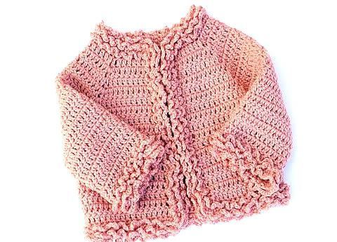
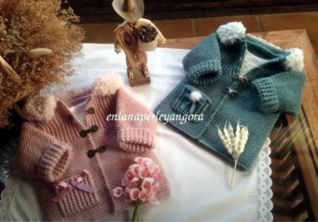
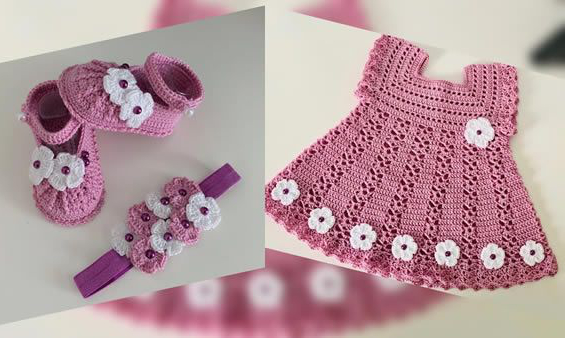

Bonita chaqueta de invierno tejida a crochet para niños o bebés. Esta chaqueta tejida a ganchillo se puede hacer en cualquier talla, es muy fácil y rápida de hacer.

Abrigo chaquetón para bebé
Abrigo chaquetón para bebé modelo Xabier tejido en 2 agujas. Este abriguito es muy elegante y súper bonito, puede servir tanto para niño como niña con colores que mas te gusten o se adapten a lo que necesitas, está realizado para un niño de uno 6 meses, aunque es muy importante tener en cuenta que siempre es necesario tomar medidas del bebé ya que no todos los niños tienen el mismo tamaño, lo ideal es medir y adaptar a la medida en cada caso.

Conjunto para bebé de 3 meses

Como hacer un lindo conjunto tejido a crochet para bebé de 0 a 3 meses. El conjunto lleva los zapatitos, la diadema y el vestido para bebe tejidos a Crochet con instrucciones detalladas que te guiaran con el patrón paso a paso.